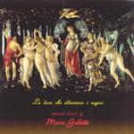

| Artist: | Marco Galletti |
| Title: | La Luce Che Illumina I Sogni |
| Label: | self produced MG200501 |
| Length(s): | 48 minutes |
| Year(s) of release: | 2005 |
| Month of review: | [02/2006] |
| 1) | E Vorrei... | 9.18 |
| 2) | La Luce Che Illumina I Sogni | 7.17 |
| 3) | Punti Indefiniti | 4.41 |
| 4) | L'Aria Che Respiri | 5.24 |
| 5) | Abbracciandoti | 4.55 |
| 6) | Questa Luna | 5.22 |
| 7) | Nell' Infinito Cielo | 6.15 |
| 8) | Ritorna Il Sole | 5.25 |
The title track is up next. This one opens more orchestrally. The gait of the track is easy going, very laid back, and features some whisperingly sung vocals. They serve to add to the atmosphere. The song has a relatively strong beat, and even some guitar work and softly brimming organ. The melodic material is nice, a bit filmic, but the orchestralness is obviously coming from a synthesizer and because of that sounds quite synthetic. Closest reference I can think of are Italian singer songwriters like Battisti and Branduardi, but then played solo (with all the limitations that might give).
The rhythms, however, are generally a bit more modern than these Italian heroes of the seventies, as evidenced by La Luce Che Illumina I Sogni. Again, the melodies are delicate and beautiful. At times I am reminded of the Twin Peaks soundtrack, that is until the beat sets in more forcefully. The song does have tempo changes, alternating between a semi-classical mode and a synthi pop mode. I think the vocals are a good find.
Punti Indefiniti is a relatively up-beat melodic tune with some synth strings for atmosphere. L'Aria Che Respiri has some French/Latin influences because of the accordion style melody in the middle, which is also ratehr percussive. The sounds remind me somewhat of Kitaro, but all a bit more lo-fi and percussive. Abbracciandoti is a more sinister piece with percussives in the back, an organ at the front (but subdued), and the vocals of Galletti at their darkest. His vocals become more throaty along the way, more intense too.
On Questa Luna, the piano plays a large role, later this role is taken up by the keyboards. Plenty of keyboards and sequencers again, which make for a very electronic sound, but with vocals. Nell' Infinito Cielo is by comparison quite poppy, led by a dancing piano theme, while in the middle the 'accordion' sets in again for some more chanson like elements. Closer Ritorna Il Sole opens with a filmic vocal melody and shows again that Galletti can write excellent melodies and songs.